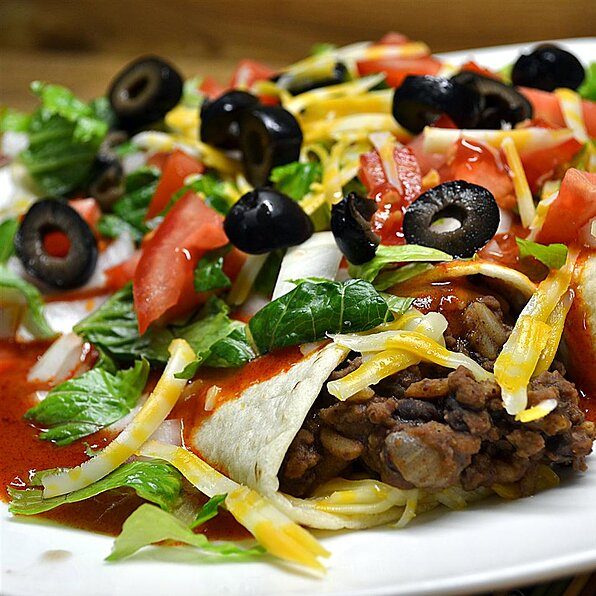

Burrito!

Description!
Here we have a wonderful meal that fulfills a variety of your dietary needs,
giving you a good source of protein and vegetables while also being very
easy to customize just for you! I personally love this meal particularly when
its colder and im looking for a filling meal. Total cook time is ~1 hour and this
recipe provides 4 servings.
Nutritional Facts per serving
- 1191 calories
- protein 59.1g
- carbohydrates 103.9g
- fat 59.3g
- cholesterol 179.2mg
- sodium 2550.9mg
Ingredients
- 1 pound lean ground beef
- ½ cup chopped onion
- 2 cloves garlic, minced
- 1 (14.5 ounce) can diced tomatoes with juice, divided
- 1 tablespoon Worcestershire sauce
- 1-½ teaspoons chili powder
- 1 teaspoon paprika
- 1 teaspoon dried oregano
- ¾ teaspoon ground cumin
- ½ teaspoon ground black pepper
- 2 cups refried beans
- ¼ teaspoon ground cumin
- 1 (18 ounce) jar beef gravy
- 1 (10 ounce) can enchilada sauce
- 4 large flour tortillas
- 2 cups shredded Cheddar cheese, divided
- 1 cup sour cream, divided
- ¼ cup chopped onion, divided
- ¼ cup chopped tomatoes, divided
- 1 cup chopped lettuce, divided
Steps
- Preheat the oven to 375 degrees F (190 degrees C).
- Place a skillet over medium heat. Cook and stir ground beef, 1/2 cup chopped onion, and garlic in the hot skillet until beef is browned and crumbly, breaking it apart as it cooks, about 8 minutes; drain excess grease. Mix in half the can of diced tomatoes, Worcestershire sauce, chili powder, paprika, oregano, 3/4 teaspoon of cumin, and black pepper. Bring meat mixture to a boil over medium-high heat and cook for 5 minutes, stirring often.
- Heat refried beans and 1/4 teaspoon cumin in a saucepan over medium-low heat. Keep beans warm. Mix remaining half of diced tomatoes, beef gravy, and enchilada sauce in a separate saucepan; bring to a boil.
- Place tortillas onto a microwave-safe plate and cover with a damp paper towel; microwave tortillas until they are soft and warm, about 30 seconds. Place a warmed tortilla onto a work surface and spoon 1/4 the beef mixture in a line down the center of the tortilla. Layer 1/4 the bean mixture on top of beef layer and spread 1/4 cup of Cheddar cheese over the bean layer. Fold right and left edges of the tortilla over the ends of the filling and roll up tortilla to make a burrito. Place burrito seam side down into a 9x13-inch baking dish. Repeat with remaining tortillas to make 4 burritos.
- Pour gravy sauce over the burritos in the baking dish; top with remaining 1 cup Cheddar cheese.
- Bake burritos in the preheated oven until the cheese has melted, 15 to 20 minutes. To serve, place each burrito on a serving plate and spoon sauce from baking dish over the burritos. Top each burrito with 1/4 cup sour cream, 1 tablespoon chopped onion and chopped tomato, and 1/4 cup of chopped lettuce.